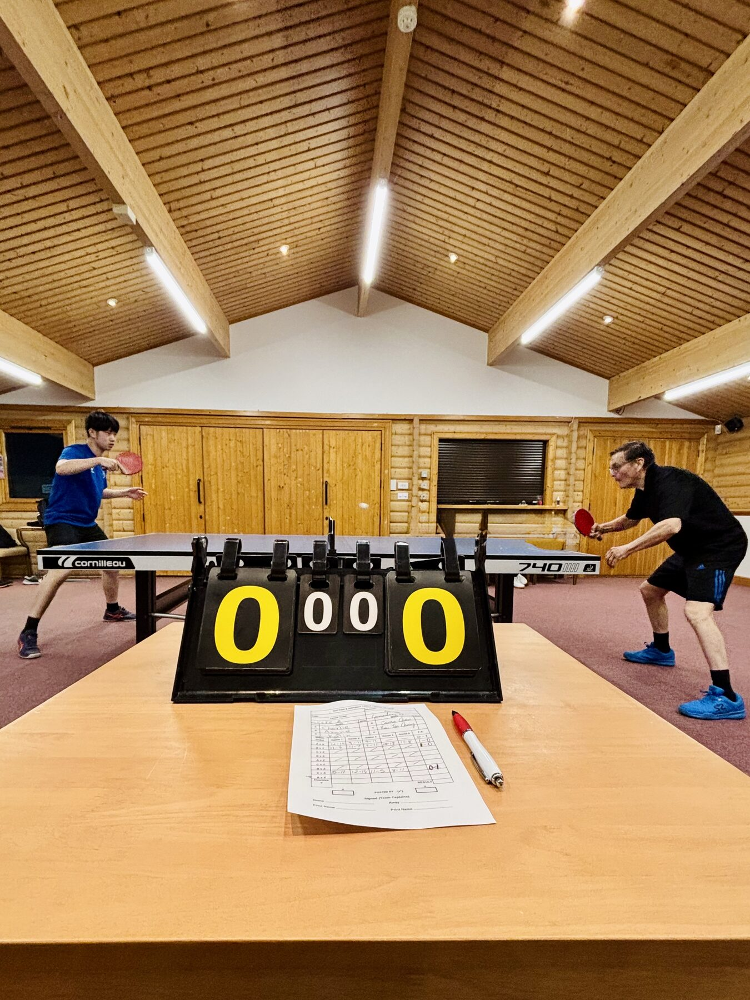

Practice sessions
Practice takes place on Sunday, Monday, Wednesday and Thursday evenings, from around 7pm.
Contact Lewis for the current arrangements before attending.
Table tennis at CLTC
Pick up a bat, enjoy a friendly game and be part of the club beyond the tennis courts. Table tennis is played in the clubhouse by adult members of a range of experience.

At the club
Whether you are picking up a bat for the first time, returning to the game or looking for competitive play, the table tennis group can help you find the right way to get involved.
Table tennis is currently for adults. There is no junior provision at present, though this may be considered in future.
Getting involved
Check the club calendar before playing and contact Lewis if you would like to join a session.
Practice takes place on Sunday, Monday, Wednesday and Thursday evenings, from around 7pm.
Contact Lewis for the current arrangements before attending.
Members are encouraged to play at other times, provided the club calendar shows that the hall is available.
Check the calendar before you go to the clubhouse.
During the season, usually from the second week of September until Easter, Monday and Wednesday evenings may be used for home league or cup matches.
Practice is not available when a home match is taking place.
Membership
Table tennis membership is for adults. For current packages and joining, please use ClubSpark or contact the membership secretary.
£60
Annual table tennis membership.
Contact
Lewis can confirm the current arrangements and help you decide whether table tennis at the club is right for you.
Table tennis contact